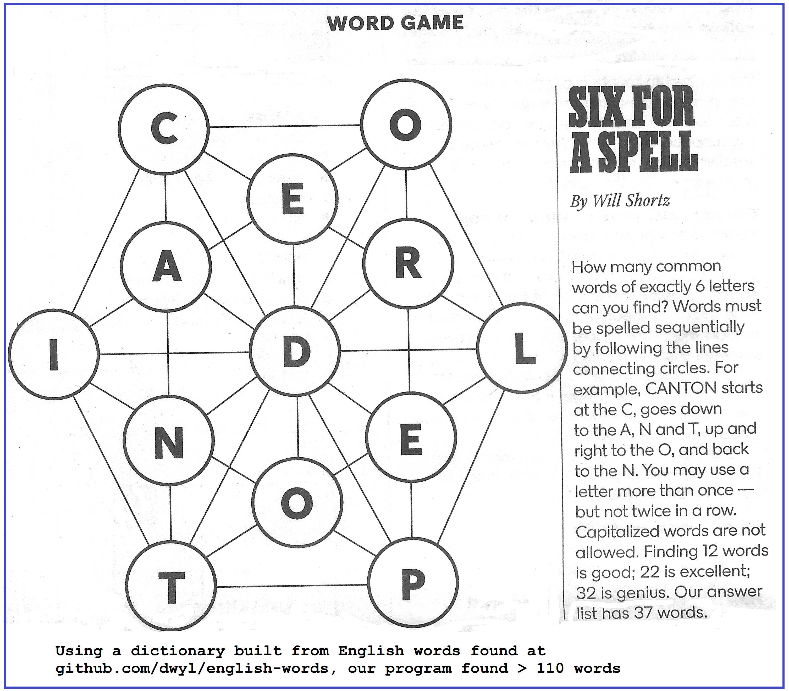

Solve the Six For a Spell Puzzle
- As your starting place, use the driver.cpp found in "PM2 Starter Files" (see References above)
- Modify this driver.cpp by adding free standing operations that use one (or more) common graph algorithms to solve the Six For a Spell puzzle
- Your implementation must:
- Be in a Visual Studio project called PM2 and be stored in your repository
- The driver.cpp must use the provided loadGraph() operation unchanged to load data into your graph variable
- Use one (or more) common graph algorithm(s) to compute a list of 6 letter English words from the graph provided in the image to the right
- Must first output the number of words your algorithm finds and then the list of words it finds
- Use the dictionary.dat file to check the legitimacy of a computed word (see "Dictionary Resources for Project" in Reference above)
- Be layered on either your UnlabeledUndirectedGraph1 implementation or UnlabeledUndirectedGraph0 implemention (which can be found in "PM2 Starter Files")
- Leverage other already existing appropriate components from the component list whose implementations can be found in the folder: components\include - in the diagram to the right this is represented by the arrow to the Other Concepts oval
- By leverage (in #5 above) we mean, for example:
- If you need searching or sorting, then find a component that already has that functionality, i.e., do not reimplement these algorithms
- If you need a container to temporarily store things, then find a component that provides that functionality
- Use the minimalization principle, i.e., attempt to find a component that provides the minimal functionality required
- Recommended:
- Test and debug with a smaller data set - see the driver.cpp in the "PM2 Starter Files"
- Use checking components when in Debug Mode
- To improve performance, focus your use of the data in dictionary.dat because it contains a lot of words that you will not need
2. Grading of PM2
- Your driver.cpp from the folder PM2 will be compiled/built/tested
- Your program will be tested/executed at a minimum using the graph data provided in the supplied driver.cpp
- It is possible that we might also substitute a different graph for additional testing
- We will be assessing not only on the number of words and the actual words found, but also on the "Your implementation must" list of items found above
3. Submitting the Assignment for Grading
- Follow VS2022 instructions for committing and pushing your
completed PM2 project to your GitHub Education CSSE373 repo
- Use the commit message "PM2, ready for grading"
|


|